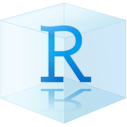

library(readr) # load data
raw_data <- readr::read_csv("/home/halina/projects/training/data/raw_data.csv")2 R Projects
Acknowledgements
Lesson is based on the National Center for Ecological Analysis & Synthesis (NCEAS) Learning Hub’s coreR Course and Allison Horst’s EDS 221 Scienfitic Programming la la la
How Code Finds Stuff (From Data to Files to Images)
There are two types of paths in computing: absolute paths and relative paths.
An absolute path is the full path to a file or directory, starting from the root directory of the file system. It tells the system exactly where a file or folder is located, no matter where you are in the file structure.
- On Windows, the absolute path starts with a drive letter:
C:\Users\Halina\Documents\training\data\raw_data.csv - On Unix/Linux/macOS, the absolute path starts with a root:
/home/halina/projects/training/data/raw_data.csv
A relative path specifies a file or directory location in relation to the current working directory (where you are in the file system when running the command or script).
- It doesn’t start with the root or a drive letter
- It’s flexible depending on where your program or terminal session is running
- If you’re currently in
C:\Users\Halina\Documents\training, the relative path to the raw data file might be:\data\raw_data.csv
Absolute File Paths can break!
How would this code break?
- If I was on a different computer or switched user accounts on the same computer.
/home/halina/...is an absolute path specific to MY user account on MY computer. Another computer likely won’t have that same directory structure or username. Other users will have their own home directories, like/home/otheruser/, and won’t be able to access files in my home folder. - If I moved
raw_data.csvto a different location on the same computer. Since the path is hardcoded, the code can’t find the file anymore unless I update the path to reflect the new location. - If I shared this with a collaborator. My collaborators would not be able to run it because they don’t have
/home/halina/on their computers. - If I shared this with someone on a Windows computer. It may break because absolute file paths are formatted differently across operating systems. My Mac uses
/Users/...or/home/..., while Windows usesC:/Users/..., so the hardcoded path wouldn’t exist on their system.
Robust File Paths Using R Projects & the here package
When you create an R Project, it sets up a dedicated folder (directory) for your work and creates a hidden file with a .Rproj extension. When you open the project in RStudio, R automatically sets the working directory to this folder (your project’s “home base”) making it easy to organize and reference all your code, data, and outputs.


While R Projects and the .Rproj file enable the use of relative paths, they don’t address all potential issues with breakable file paths. One challenge when working across different operating systems (Windows, macOS, or Linux) is that file paths can be formatted differently. Windows uses backslashes (\), while Unix-like systems (macOS/Linux) use forward slashes (/). Also, absolute file paths are tied to your machine’s file structure, so code that works on your computer might break on someone else’s.
The here package helps solve this by constructing file paths relative to your project directory—regardless of your operating system. This makes your code more portable and reproducible.
library(readr) # load data
library(here)
# avoid absolute paths that only work on your computer
raw_data <- read_csv("C:\Users\Halina\Documents\training\data\raw_data.csv")
# avoid fragile relative paths like this
raw_data <- read_csv("data\raw_data.csv")
# use here::here() for robust, OS-agnostic paths
raw_data <- read_csv(here::here("data", "raw_data.csv"))Let’s Create an R Project
R Project Organization
A consistent folder structure makes it easier to reproduce work and collaborate with others. While directory organization can vary depending on the project, some common directories include:
data: Stores datasets. This folder often contains subdirectories such as:raw: unaltered, original data filesprocessed: cleaned or transformed datasetsmetadata: information describing the data (e.g., data dictionaries)
Rorscripts: Contains code for data cleaning, wrangling, or analysis. Some projects preferscriptsif they use multiple programming languages beyond R.plotsorfigs: Stores generated visualizations like plots, graphs, or figures.docs: Includes reports, project summaries, or other documentation relevant to the analysis.

The key is to be consistent and intentional in your organization so others (and future-you) can easily understand and reuse your work.